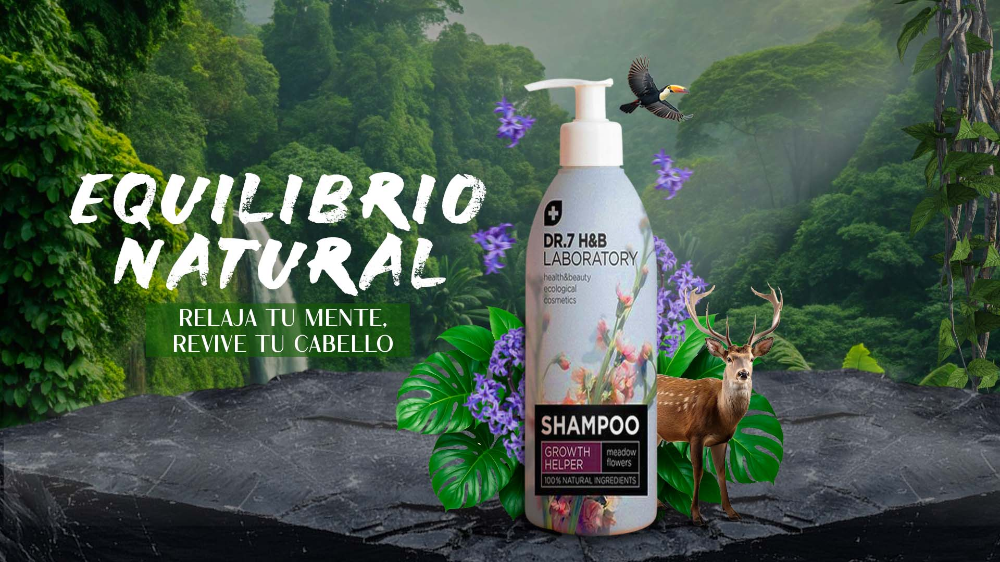

Acerca de Mí
Soy Heydi Carranza, diseñadora gráfica en formación. Para mí, el diseño es más que estética: es una forma de transmitir pensamientos, emociones e ideas que muchas veces no se dicen en voz alta. Me gusta trabajar con intención, cuidar los detalles y lograr que cada proyecto refleje algo verdadero, algo mío.
Portafolio


Hablemos
Si tienes un proyecto en mente o simplemente quieres saludar, envíame un mensaje.